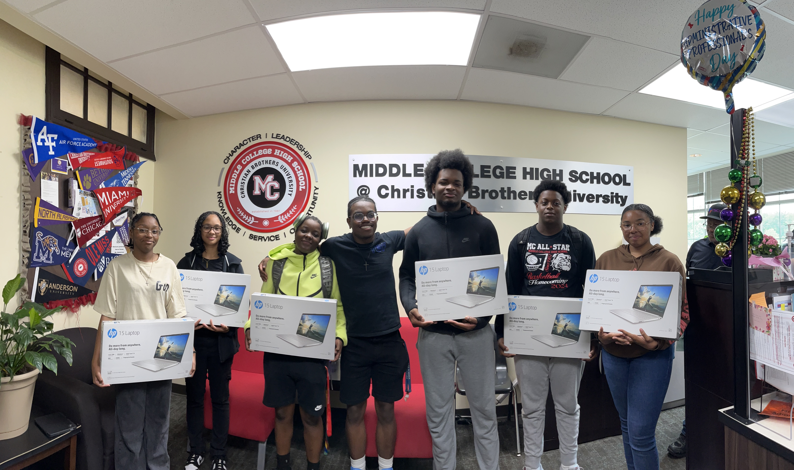

Donate Today!
Your donations fund our existing programs and help us develop new ones. Click the "donate" button below to set up recurring donations today!
Join The Team!
Want to make a meaningful impact in the lives of underrepresented students? Help out by becoming a virtual ACT tutor! Click the button to access our Google form below for more information.
About Us
The Technology Outreach Foundation aims to equip underrepresented students in STEM with the tools to succeed in college and beyond through STEM & business mentorship, college & career prep, and providing access to necessary technology. The Technology Outreach Foundation exists to bridge gaps for underrepresented students in STEM, breaking barriers our founders faced themselves.

What We Do
Our programs are focused on helping underrepresented high school students in STEM pursue and afford educations of the highest quality. To do this, students will need a large skillset, including critical thinking, problem solving, logic, adaptability, and more! By engaging in our programs, our goal is to equip our students with one or more of these skills to their tool belt so that they can chase their dreams. Our official list of programs include:
STEM Accerelator
Students in this program receive personal laptops, personal ACT tutoring, college counseling, and coding skills via project-based learning.
"With it only being 9 of us in the program, it’s very hands on. I can go to our teacher with whatever questions that I need, and he will give me an answer directly, which is very beneficial to me." - Amari Wright

ACT Tutoring/College Counseling
ACT Tutoring/College Counseling: Anybody from anywhere can receive AFFORDABLE personal ACT tutoring and college counseling, as well as sessions with friends.
Social Media Education
Our strong social media pages boast strong numbers and consistent posting, as we cover topics such as college admissions strategies, higher math concepts, business knowledge, tech skills, and leadership podcasts.
Chase Your Dreams
Need to prepare for your upcoming ACT? Need help writing your essays? Schedule your free one-hour session today!
Wanna learn how minority students got accepted into the Ivy League? Watch our Leadership Outreach series on YouTube!
Want to stay updated on college admissions, tech, and business? Follow our social media to watch our short-form content!
Want to receive a personal laptop and learn how to solve real problems using code? Apply to our STEM Accelerator Program with applications beginning in October!
Connect With Us
Follow all of our social media pages! We're on Instagram, Tiktok, YouTube, and FaceBook!
Contact Us
You can reach us via our social media pages, or our email here: technologyoutreachfoundation@gmail.com